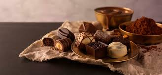

Toggle navigation
Chocolate
Home
(current)
About
Quiz
Chocolate

Previous
Next
History of Chocolate
Christopher Columbus Christopher Columbus is believed to be the first to bring cocoa beans to Europe. On his fourth visit to the 'New World' between 1502 and 1504 he discovered cocoa beans. Spain managed to keep chocolate a savory secret for nearly a century, but when the daughter of Spanish King Philip III wed French King Louis XIII in 1615, she brought her love of chocolate with her to France. The popularity of chocolate quickly spread to other European courts Chocolate remained an aristocratic nectar until Dutch chemist Coenraad Johannes van Houten in 1828 invented the cocoa press, which revolutionized chocolate-making. In 1847, British chocolate company J.S. Fry and Sons created the first solid edible chocolate bar from cocoa butter, cocoa powder and sugar. Rodolphe Lindt’s 1879 invention of the conching machine, which produced chocolate with a velvety texture and superior taste, and other advances allowed for the mass production of smooth, creamy milk chocolate on factory assembly lines. companies such as Cadbury, Mars and Hershey that ushered in a chocolate boom in the late 1800s and early 1900s that has yet to abate. Today, the average American consumes 12 lbs. of chocolate each year, and more than $75 billion worldwide is spent on chocolate annually